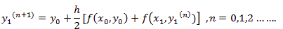
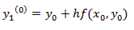

Instead of approximating f(x, y) by f(x0,y0) as in Euler's method. In the modified Euler's method we have the iteration formula:

Where y1 (n) is the nth approximation to y1 .The iteration started with the Euler's formula

The predictor-corrector method is also known as Modified-Euler method.
In the Euler method, the tangent is drawn at a point and slope is calculated for a given step size. Thus this method works best with linear functions, but for other cases, there remains a truncation error. To solve this problem the Modified Euler method is introduced. In this method instead of a point, the arithmetic average of the slope over an interval is used.